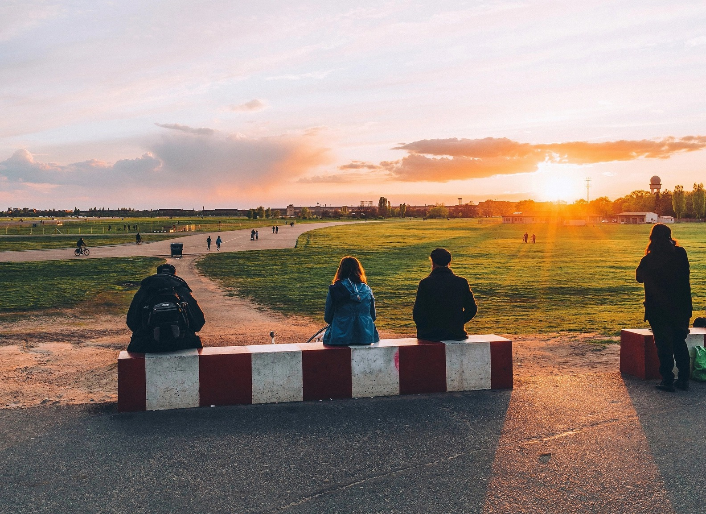

Tempelhofer
Feld.
Geen vliegtuigen meer. Wel alle ruimte voor nieuwe ideeën.
Ontdek het veld ↗
Van luchthaven naar vrije ruimte.
Tempelhofer Feld ligt midden in Berlijn en was vroeger een vliegveld. Sinds mei 2010 mag het terrein voor recreatie worden gebruikt. Het gebied is 300 hectare groot en zou ongeveer 420 voetbalvelden kunnen bevatten. Daarmee is het een van de grootste open ruimtes in een stad ter wereld. Op de oude start- en landingsbanen fiets, skate en wandel je nu.
Na de sluiting van het vliegveld kreeg de stad het enorme terrein terug, inclusief de oude terminal, veel hangars en de landingsbanen. Het park ligt tussen de wijken Tempelhof, Kreuzberg en Neukölln. De S-Bahn en U-Bahn zijn dichtbij, dus je bent er snel vanuit het centrum.
2008
De luchthaven sluit definitief
2010
Het veld gaat open als publiek stadspark
2011
Start gemeenschapstuin Allmende-Kontor
2014
Berlijn kiest bij referendum voor behoud van het open veld
Een openluchtlab voor jouw blik.
We kozen Tempelhofer Feld omdat het laat zien hoe Berlijn met zijn verleden omgaat. Op dezelfde plek waar ooit militairen exerceerden en vliegtuigen opstegen, ligt nu een park voor iedereen. Voor CSD-studenten is dit meer dan een groene pauze: je ziet hier hoe ruimtelijk ontwerp, visuele communicatie en dagelijks gebruik elkaar beïnvloeden. Neem je camera en schetsboek mee: het veld is een sterke plek voor visueel onderzoek.
Lees de openbare ruimte
Kijk hoe routes, borden en de oude belijning bezoekers richting geven. Wat is ontworpen, en wat ontstaat vanzelf?
Zie hergebruik in actie
Een landingsbaan wordt een plek om te skaten. Een tuin wordt een ontmoetingsplek. Verzamel voorbeelden van nieuwe functies voor bestaande ruimte.
Ontwerp met de stad
Het behoud van het veld en de gemeenschapstuinen maken burgerparticipatie en duurzaamheid tastbaar. Wie mag de stad vormgeven?
Zes blikken op het veld.
SLIDESHOW · CONTINUOUS LOOPVeel ruimte. Geen entreeprijs.
BEZOEKINFORMATIE / NOVEMBERIngang Paradestraße
Tempelhofer Damm, 12101 Berlin, Duitsland
Hoofdingang aan de westkant bij S- en U-Bahnstation Tempelhof, plus ingang bij Paradestraße. Dit is de ingang van het park, niet het luchthavengebouw.
De openingstijden veranderen per seizoen (zomer tot 23:00, winter tot 17:00). Na sluitingstijd kun je het park verlaten via de draaihekken bij de hoofdingangen.
Het park is gratis toegankelijk voor iedereen. Rondleidingen in het historische luchthavengebouw staan los van het parkbezoek en zijn betaald.
Van Mitte naar de open horizon.
Oranienburger Str. 65, 10117 Berlin
Inclusief wachten – indicatieve schatting met het openbaar vervoer. Totale loopafstand is ongeveer 750 meter.
Hotel → Oranienburger Tor
Vertrek bij Generator Berlin Mitte en loop westwaarts naar het metrostation U Oranienburger Tor.
Richting Alt-Mariendorf
Neem metrolijn U6 zonder overstap naar station Paradestraße of station Tempelhof.
Paradestraße → het veld
Loop naar de parkingang Paradestraße aan de Tempelhofer Damm. Je komt aan de westkant het veld op.
Zo ligt het veld in de stad.
STATISCHE KAART · GEEN LIVE ROUTEKijken is ook een opdracht.
Maak van je bezoek een klein visueel onderzoek. Werk in duo's en leg vast hoe mensen hun weg vinden en de openbare ruimte gebruiken.